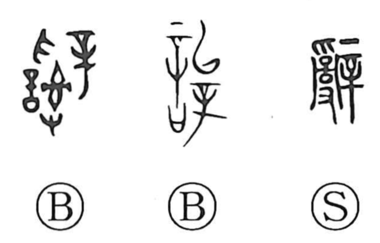

辞

Kun: yameru, kotoba | On: ji
words ・ speech ・ to resign ・ to decline ・ to refuse
Explanation
Originally written as 辭, the character depicts a hand working at a tangle of ‘thread shackles’ together with 辛, the large, handled needle. It pictures the careful untying and disentangling of snarled threads with a needle, and from this core image came the sense of undoing or resolving. In early legal contexts it referred to the words that dispelled suspicion by clarifying a charge, and by extension to such explanatory speech itself. The meaning then broadened to language and words in general, and later to the act of stepping back or declining, as reflected in compounds like 辞謝 and 辞退.